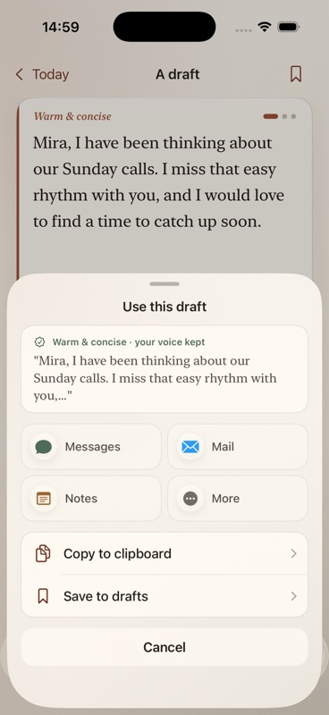

Name the person
Frame the message around who matters, not a document type.
ProsePal helps someone write a thoughtful personal message without turning the moment into a form, a chat session, or a blank page. Start with the person. Add the detail that matters. Get one useful draft—and keep control of every word.
This is an evergreen system explainer, not a release tracker. The evidence matrix and open backlog remain the canonical sources for implementation and release readiness.

Imagine opening a card for someone you care about and knowing roughly what you feel, but not how to begin. ProsePal does not ask you to “chat with AI.” It gently asks who the message is for, what has happened, and what you genuinely want them to know.
Only after you press Write draft does the app create anything. The result is still your message: you can change it, ask for a warmer or shorter version, return to an earlier version, or simply copy it and send it. The app never sends a message on your behalf.
Frame the message around who matters, not a document type.
Relationship, occasion, register, and length shape the writing.
Type or dictate the detail to include, avoid, or handle carefully.
The private or careful route produces one primary message.
Adjust, undo, copy, share, send, or deliberately save.
flowchart LR
A[Open app] --> B{First run?}
B -- Yes --> C[Short welcome]
B -- No --> D[Moment Sheet]
C --> D
D --> E[Person + relationship]
E --> F[Occasion + register]
F --> G[One true thing]
G --> H[Tap Write draft]
H --> I{Writing route}
I --> J[Private on-device]
I --> K[Careful gateway]
J --> L[One primary draft]
K --> L
L --> M[Edit / adjust / undo]
M --> N[Copy / share / send / save]
Read this from left to right: the app gathers context, chooses where the writing can happen, returns one draft, and then gives control back to the user.
The features below are all parts of one job: helping a person turn a real feeling into a message they are comfortable sending. Some features gather the right details, some create and improve the draft, and others make sure nothing is lost or saved without permission.
There are also quieter features underneath—secure sign-in, payment checking, local storage, and accessibility support. A user should not have to understand those systems, but they are what make the simple surface trustworthy.
This is the gentle setup before writing begins. Instead of asking for a complicated prompt, ProsePal gathers the few human details that make a message sound personal.
The flow begins with who the message is for and keeps the layout stable while a name is being entered.
Grouped relationship choices help the writing fit family, friendship, romance, and work contexts.
A broad occasion catalogue sits beneath a focused, searchable picker rather than a giant grid.
Human-readable registers express the stakes without exposing models or providers.
The user supplies the real sentence or detail that should anchor the message.
Optional constraints help preserve details and prevent unwanted wording or topics.
Where Apple speech recognition is available, spoken thoughts can become editable moment detail.
Spelling follows the device locale without adding another preference form.
When the user is ready, the app chooses the most suitable writing route and turns those details into one useful starting point.
Nothing drafts while the user types. “Write draft” is a clear act of consent.
Everyday writing uses Apple Foundation Models on device where the runtime is available.
Harder moments can use a ProsePal-owned gateway with provider details kept behind the boundary.
Eligible availability and service failures can route to the other lane instead of simply losing the moment.
Offline, timeout, refusal, limit, and configuration errors return user-safe explanations and retry paths.
Some high-risk input stops before either writing lane and shows immediate-support actions instead of generating a message.
Obvious guilt, reassurance-seeking, or heavy wording can be flagged as writing feedback—not diagnosis.
Rewriting should never mean losing the version that felt right. Every meaningful change keeps a way back.
The generated message remains user-owned, selectable, and editable.
Warmer, shorter, and more direct rewrites sit beside the draft instead of starting a new session.
The current draft is passed as context for a more careful version.
Substantial edits and rewrites create snapshots before replacing text.
A current-session history sheet can restore a specific earlier snapshot.
The active draft, moment fields, and snapshot stack survive an app restart until the user starts over.
ProsePal helps finish the job, but the user remains in charge of whether the message is copied, shared, sent, saved, or discarded.
The primary action puts the draft on the pasteboard and confirms completion.
Messages and Mail are presented as clear destinations without pretending ProsePal sent anything itself.
The system share sheet keeps other destinations available.
Drafts enter the local library only when the user chooses Save.
Saved messages can be opened, edited, copied, shared, and deleted.
Generated messages are not silently turned into a visible history feed.
With permission, the app can remember small details about a person so the next message begins with genuine context instead of generic wording.
Small, approved facts or memories can be saved for a person and used in future private drafts.
A user-written style note helps future drafts sound more like the user.
Memory is explicit and editable; the app does not silently infer relationship facts.
Destructive deletion is confirmed, and failed persistence restores the previous local state.
Settings can create, preview, refresh, and copy a portable snapshot of saved local data.
SwiftData lives in backup-excluded Application Support with an ephemeral fallback if storage cannot open.
An account is for continuity, not entry. Apple handles payment, while ProsePal carefully keeps the signed-in person and their access in sync.
Someone can experience the core writing loop without creating an account.
Native Apple identity connects to Supabase for continuity and authenticated gateway access.
Sessions live in the device-bound Keychain; refresh is single-flight, rotated, and race-safe.
Premium appears from plan, limit, or Settings boundaries—not as a first-run wall.
Products, purchase, restore, verified transaction updates, and entitlement convergence use Apple-native APIs.
The authenticated server path and local cleanup remove account and local vault state with honest partial-failure messaging.
These are extra doors into the same app—from a widget, Shortcut, Action Button, or something selected in another app.
Start a Moment from system actions and hand it into the same native writing flow.
A WidgetKit entry point opens a new Moment from the Home Screen.
A WidgetKit control opens the Moment Sheet through the app’s deep-link contract.
Selected text or a URL can be sanitized, stored through the app group, and handed to a Moment without placing raw text in the URL.
The interface responds to Apple’s accessibility settings so larger text, reduced motion, and clearer surfaces do not block the writing flow.
Large accessibility sizes move important draft actions inline and keep entry fields reachable.
Glass and translucent surfaces become opaque when the system preference is enabled.
Motion-sensitive effects respond to the system accessibility setting.
Icon-only actions receive accessible labels, with standard SwiftUI navigation and selectable text.
Some messages are straightforward: a birthday note, a thank-you, or a quick check-in. On supported iPhones, ProsePal can write these privately on the device itself. The words do not need to leave the phone for the draft to be created.
Other moments need more care, or the on-device writer may not be available. In those cases the app can ask ProsePal’s secure internet service—the gateway—for help. The user still sees one calm writing experience; the complicated choice of where the work happens is made behind the scenes.
If one route cannot complete the job, the app may try the other when that is appropriate. It does not blindly retry everything: cancellations, refusals, and certain failures stop cleanly so the app never disguises what happened.
Designed for ordinary personal messages where Apple’s on-device model is available.
Designed for harder moments and explicit careful rewrites through the ProsePal gateway.
flowchart TD
A[MomentInput] --> B{Enough context?}
B -- No --> C[Ask for the missing person/context]
B -- Yes --> S{Drafting allowed?}
S -- No --> T[Stop drafting]
T --> U[Show immediate-support actions]
S -- Yes --> D{Product lane decision}
D -- Everyday --> E[Private on-device client]
D -- Sensitive / Take care --> F[Careful gateway client]
E --> G{Eligible service failure?}
F --> H{Eligible careful-lane failure?}
G -- Yes --> F
G -- No --> I[User-safe error]
H -- Yes --> E
H -- No --> I
E --> J[MomentDraftBundle]
F --> J
J --> K[Local pressure feedback]
K --> L[Draft + reversible actions]
Read this from top to bottom. The app checks that it has enough information and that drafting is appropriate, chooses a writing route, and only tries the other route for failures where doing so is honest and safe.
The gateway is a small, controlled service on the internet that sits between the iPhone app and an outside writing model. Think of it as a trusted receptionist and editor. It checks that the request really came from an allowed app user, removes anything malformed, and passes only the expected message details onward.
The outside model proposes three possible messages. Before any wording reaches the phone, the gateway checks that the answers are complete, different from one another, suitable for the occasion, and free from obvious filler or references to AI machinery. If the first configured model fails, the gateway can try an approved fallback without revealing any model names to the user.
Before paying an outside model to write, it reserves the request against burst and usage rules. The same request key can safely recover a finished response after a lost connection without calling the model or charging usage twice. Operational records contain facts such as time taken and whether a check failed—not the recipient’s name, the personal story, the finished message, or sign-in secrets.
sequenceDiagram
autonumber
actor Person
participant App as iPhone app
participant Auth as Auth session
participant Edge as generate-card gateway
participant AI as Configured provider
participant DB as Usage policy database
Person->>App: Tap Write draft / Take more care
App->>Auth: Request current access token
Auth-->>App: Valid token or safely refreshed token
App->>Edge: Structured writing request
Edge->>Edge: Authenticate, sanitize, cap, validate lane
Edge->>DB: Reserve idempotency, burst, and usage capacity
DB-->>Edge: Reserved, replayed, or user-safe rejection
Edge->>AI: Structured prompt (15s provider budget)
AI-->>Edge: Three structured message options
Edge->>Edge: Quality checks and configured fallback if needed
Edge->>DB: Finalize success once, or release failed attempt
Edge-->>App: Checked message response
App-->>Person: One primary draft + actions
The numbers show the order of one careful internet request. Personal details travel only where needed for writing; operational logs keep timing and outcome information instead of the message itself.
Signed-in requests carry a short-lived digital pass called a JWT, which Supabase verifies. Development access remains closed unless its separate secret is deliberately configured.
Names, context, include and avoid notes, app information, and writing modes are cleaned and length-limited before any outside model is called.
Provider URL, key, model, fallback models, sampling, token limits, and JSON behavior remain outside the client.
Responses must be structured, distinct, non-empty, appropriately specific, and free of generic filler or provider/internal language.
Operational logs carry lanes, versions, latency, failure buckets, and redacted identity—not prompts, names, tokens, or generated drafts.
Provider timeouts, malformed output, quality failure, auth failure, configuration failure, and usage limits map to stable user-safe errors.
The first screen gathers just enough context to begin. The second shows that the finished words can move into ordinary iPhone actions such as Messages, Mail, or another sharing destination. The third is the private library—but only for drafts the user deliberately chose to keep.
This matters because personal messages are not ordinary content. ProsePal avoids quietly building a history of every awkward apology, family detail, or unfinished thought someone happened to generate.



A simple-looking app still has to remember who signed in, confirm whether Apple accepted a purchase, keep private notes safe, and recover cleanly when the internet disappears. These systems are deliberately separated. A payment problem should not erase a draft; a failed sign-in refresh should not invent Premium access; and a storage problem should not crash the whole app.
When someone chooses Sign in with Apple, ProsePal needs to remember them without repeatedly asking them to sign in. The app stores that signed-in session in Apple’s protected Keychain—the same kind of secure storage intended for credentials.
The small digital pass used for internet requests expires regularly. ProsePal quietly refreshes it, makes sure several simultaneous requests do not perform several refreshes, and saves the replacement before using it. A temporary loss of internet does not pretend the person signed out, while a genuinely rejected session is cleared safely.
flowchart LR
A[Anonymous first use] --> B[Sign in with Apple]
B --> C[Verify Apple sign-in with Supabase]
C --> D[Keychain session]
D --> E{Access token usable?}
E -- Yes --> F[Authenticated gateway request]
E -- No --> G[Single-flight refresh]
G --> H[Persist rotated session]
H --> F
D --> I[Sign out / account deletion]
I --> J[Cancel refresh + clear local identity]
The user can begin without an account. After they choose to sign in, the app remembers the verified session, renews its temporary pass when needed, and clears it safely on sign-out or deletion.
Apple—not ProsePal—decides whether a subscription was actually bought, renewed, restored, refunded, or shared with the family. The app asks StoreKit for the products and waits for Apple’s verified answer before showing Premium as active.
It also listens for changes that can arrive later, such as an approved purchase or a refund. Unverified transactions never unlock anything. A verified transaction is only marked finished after the app’s entitlement state has caught up, so a temporary failure can be delivered again instead of being silently lost.
Saved drafts and relationship notes live on the phone in a local vault. They are not automatically uploaded just because an account exists. The vault is kept out of device backups, can be exported into a readable file, and can be erased from Settings or as part of account deletion.
Under the hood, SwiftData gives those records a defined structure and migration path so future app versions can understand older saved data. If the permanent store cannot open, the app can fall back to temporary storage rather than crashing at launch—and it tells the user that the storage is temporary.
People often use ProsePal when finding the words already feels difficult. If the internet drops or a service takes too long, the worst response would be to lose their note, show a button that does nothing, or claim something was saved when it was not.
The app therefore treats failure as a real part of the experience. It keeps what the user typed, explains what is known, offers a retry only when retrying is real, and waits for storage or payment confirmation before showing success.
“Try again” performs a real retry. Repeated taps and late results cannot replace newer work.
On-device and gateway timeouts have separate product-neutral explanations and cancellation behavior.
The UI avoids invented weekly limits, reset dates, meters, or “unlimited” promises.
Model and gateway refusals become understandable app language without exposing the provider.
Memory edits and deletes show success only after the local save succeeds; failures roll back.
Unconfigured auth, gateway, subscriptions, or local model capability produce explicit readiness states—not empty buttons.
This list is intentional restraint, not missing ambition. ProsePal is meant to help finish a personal message. Every extra system that distracts from that job also creates more privacy, reliability, and support work.
You do not need these terms to use ProsePal. They are included so the diagrams and “under the hood” explanations never require guesswork.
A visual guide should remain readable. The detailed evidence matrix answers “Where is this implemented and how was it tested?” The backlog answers “What still needs work?” The release brief answers “What must be true before v1 launches?” Keeping those jobs separate prevents a friendly overview from becoming an outdated project-status report.